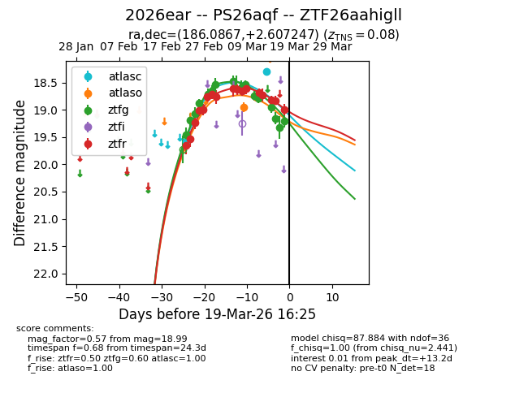
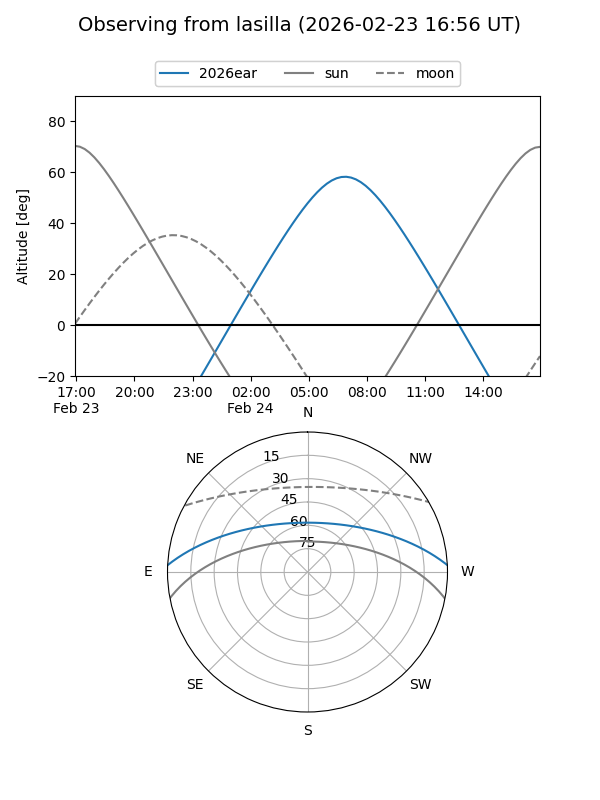
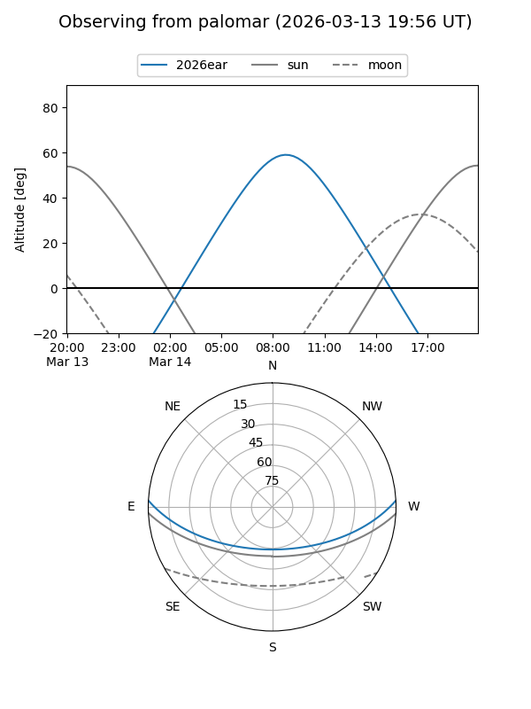
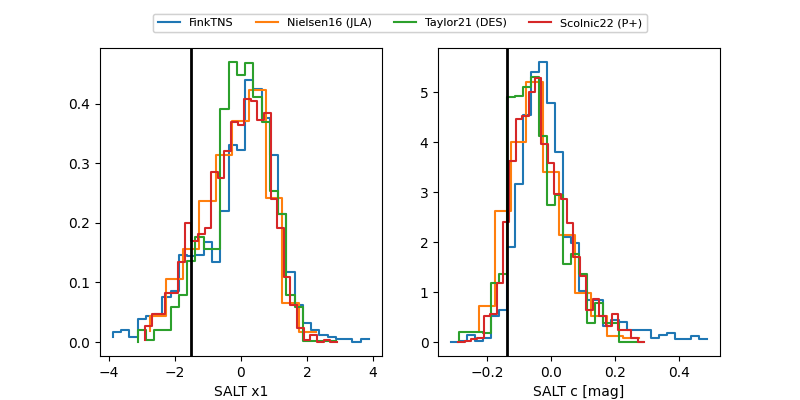

2026ear
Target 2026ear at 2026-03-19 16:26
Aliases and brokers:
FINK: link
Lasair: link
ALeRCE: link
TNS: link
YSE: link
alt names
ZTF26aahigll (ztf,fink_ztf)
2026ear (tns,yse)
PS26aqf (panstarrs)
Coordinates:
equatorial (ra, dec) = 186.0867,+2.60725
equatorial (HMS+DMS) = 12:24:20.82,+02:36:26.09
galactic (l, b) = (286.9687,+64.63606)
Flags:
confirmed ia
Photometry:
last atlasc=18.30, atlaso=18.78, ztfg=19.21, ztfr=18.99
2 atlasc, 2 atlaso, 16 ztfg, 17 ztfr detections
Lightcurve

Visibility


Additional plots
